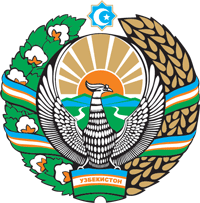
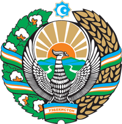
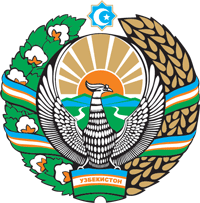
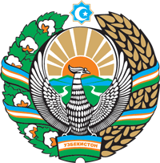

Quyida AKT xodimlari uchun kerakli dasturlar va ma'lumotlar bor
Umid qilamanki bu ishimizni tezligini va samaradorligini oshiradi
Taklifalaringiz bo'lsa
 dan yozing
dan yozing
Ushbu sahifa Toshkent tumani Tibbiyot Birlashmasi Axborot-kommunikatsiya texnologiyalari (AKT) bo'yicha muhandisi Suhrob tomonidan zamonaviy ish faoliyatini optimallashtirish, tibbiyot xodimlarining samaradorligini oshirish hamda axborot resurslaridan oqilona va xavfsiz foydalanishni ta'minlash maqsadida ishlab chiqilgan. Sahifaning asosiy vazifasi — ish jarayonida dolzarb bo'lgan, ishonchli va foydali elektron manbalarni bir joyga jamlab, tibbiyot sohasi vakillarining vaqtini tejash, mehnat unumdorligini kuchaytirish va kasbiy rivojlanish imkoniyatlarini kengaytirishdan iborat. Texnologiyalar tez sur'atlar bilan rivojlanayotgan bugungi kunda sog'liqni saqlash tizimi ham raqamli yechimlarga tayanishi, zamonaviy axborot texnologiyalaridan samarali foydalanishi zarur. Shu boisdan mazkur loyiha, tibbiy muassasalarda raqamlashtirish jarayonlarini ilgari surish, ishchi kuchining texnik savodxonligini oshirish va axborot xavfsizligini ta'minlash yo'lidagi muhim qadam sifatida ko'riladi. Har bir mutaxassisning kasbiy o'sishi, bemorlar salomatligini saqlashdagi yondashuvi va ish faoliyatidagi mas'uliyatni oshirish — aynan shunday innovatsion tashabbus va zamonaviy vositalar orqali erishiladi.
© 2025 Toshkent Tumani Tibbiyot Birlashmasi. Suhrob 003 Barcha huquqlar himoyalangan.